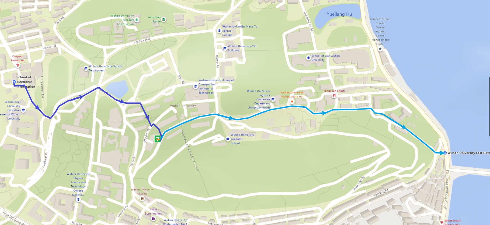

我是一颗骄傲水滴
跨年前72小时
2021年12月29日，这一天的我已经无心再继续学习。
宗佳怡还没有回武汉，原定下午继续完成电离层的报告，但是今天阳光很好，而我又正在东湖边，所以我想：出去走走吧！
但是实际上上午花了不少时间在重订房间和退订私影的事情上，起因是早上看房间居然比两天前预定的同样的酒店更便宜，然后就再一次比较了附近的几乎所有预算内的酒店。
大约11点钟左右从靠近西门电信院办出发，上山往位于湖滨的东门前进。中途绕道到梅园食堂后面的711买了一个名古屋炸鸡串。

![名古屋炸鸡串]
然后沿着东湖东路一直走到对面，在湖中小路行走时，两面都是湖而且没有什么遮挡，觉得是观赏日出的绝佳之地，作为第一备选。往光谷大桥的方向继续前进，在路上看到了两只小狗在慵懒地晒太阳，好像黄色狗狗把白色狗狗（脏狗狗）看成妈妈。
![晒太阳的狗]
在光谷大桥底下我租了一辆共享单车，扫到的还是红包车，但是需要我停到指定位置，我觉得太智障了，所以我还是正常扫码借的车。之后骑着车穿过小道通往要住的酒店（我印象中好像也是以前的东湖高新技术开发区），印象中这条小道我之前走过，一路上坡路不少，路面不齐，还有很多军事管理区。
![去酒店踩点]
酒店环境不错，可是我手机没有电了。为了确定元旦看日出的位置，我又借了一个共享充电宝，下载了starwalk和stellarium。确定日出方向在湖边朝向光谷广场的方向，正好被一群高楼挡住了，也就是说不能在吴家湾大厦的湖边看不到日出。
随后沿着珞喻路走到光谷广场，在光谷世界城步行街逛了一中午。在西班牙风情步行街寻找之前预定又取消了的的私人影院，在意大利风情步行街探索刚搬新家的VOX Livehouse，在德国风情步行街发现已经荒废的飞行餐厅，在法国风情步行街回忆去年国庆在小民大排档的晚上。
大约下午两点，我骑车从光谷广场沿着珞喻路，经过吴家湾大厦、武汉体育学院到卓刀泉立交桥下左转，再经过光谷大桥、曾经的三环公寓一直到了武汉大学东门。然而我还是想去凌波门看看，于是又停了车沿着东湖边走到凌波门。
![12.29下午三点的凌波门]
意料之中,凌波门由于疫情原因暂不开放,于是再凌波门坐了片刻后,我继续 沿着东湖走,一直走到了工学部的文澜门,随后进入学校。穿过工学部回到了熟悉的文理学部，在田园食堂附近发现了一家新开业的零食店，消费满18送一瓶AD钙奶，于是我买了一盒海苔卷，两盒比巴卜，一袋脆骨、一盒M&M豆和一个泡椒猪皮，拿着一大袋零食回了办公室。
美好的一天几乎到此结束，期待着第二天宗佳怡从成都坐飞机回武汉。
跨年前48小时
原计划宗佳怡在12月30日下午2点乘飞机晚上7点到，但是前一天晚上航班突然被取消了，宗佳怡赶紧买了高铁。
前一天想到要去天河机场接宗佳怡，如果早上去武大的话，从街道口坐到天河机场要很久，所以下午就要出发。我干脆请了假在家躺平了一天。
下午宗佳怡快到汉口站的时候说头疼，我提前出门准备买点止痛药，结果药店的店员说现在这个药得拿医生处方才能开。然而美团上面就能直接买，买药的时候也发生了一些故事：
我是在去往汉口火车站的公交上选的，所以定位一直在变化。一开始我选了一家离火车站比较近药店，结果因为不在派送范围所以不能送回家。后来又选了一家，需要凑单我就选了一瓶氧氟沙星眼药水，下单后需要填写我的身体状况。一开始我想当然地以为是宗佳怡的药，因为之前去药店要处方，后来填完了才发现是我的滴眼液，在我修改订单的时候还有机器人打来电话询问我是否发热······。最后我换了家不需要凑单的药店，只买了止痛药。
之后我在火车站出口等宗佳怡，在看到宗佳怡之前我就进入KFC页面选好了19.9元20个上校鸡块，在看见宗佳怡的那一刹那完成下单随后付款。因为KFC我记住那一天是星期四。
之后就去拿上校鸡块，然后一起走到金敦街（其实应该在往回走一点在火车站上车）坐公交回家，和我妈妈一起吃完晚饭。那天晚上我并没有送她回家。
晚上，我得知第二天下午两点半实验室的本科生要开会，原计划下午去逛街的计划泡汤。
跨年前24小时
第二天早上起床，我和宗佳怡一起出发坐地铁去武大。
我们在桂园食堂一个人一碗热干面，然后去工学部菜市场打印了简历。然后我陪宗佳怡去找王慧，看能不能跟着武大这边做毕设。之前宗佳怡也联系过王慧，但是王慧都没有很友好地回应，宗佳怡也有些沮丧。好在当面找她最终答应了下来，还给宗佳怡安排了一个位置。
中午我们吃完饭后一起骑车去酒店办理入住，随后我又骑车回学校开会。开会主要是介绍实验室的情况以及解决本科生毕设的疑惑，我得知今年考研武大空物专业有40人，比往年要多并且大部分是本校学生，剩余的名额还有15人。我本觉得这应该很容易，毕竟比起其他专业少则都是上百人考十几个录取名额，这应该算是非常简单的，但是宗佳怡听到四十个觉得她没希望了······。我也不知道是她故作谦虚还是真的心里没底，也不知道她一开始是如何低估了考试的竞争压力。
开完会我就赶紧回酒店，到酒店已经快5点了，演出7点就要开始，我们在酒店躺了一会到6点就出门。因为宗佳怡之前在成都和同学溜冰的时候把脚磨破了，那天又穿的皮鞋，所以走路很痛就走的很慢。
我们晚上在意大利风情街买了两杯蜜雪冰城（黄桃果霸+草莓新地），在法国风情街买了5路炸鸡作为晚餐。
跨年前夜
等5路炸鸡好久还没有到我们，演出已经开始了，于是我们决定分头行动。我们先去了新VOX取票，然后我去取炸鸡。
![新VOX门前的5路炸鸡]
我们就在新VOX门口吃完了炸鸡，送的两杯奶茶已经喝不下了。